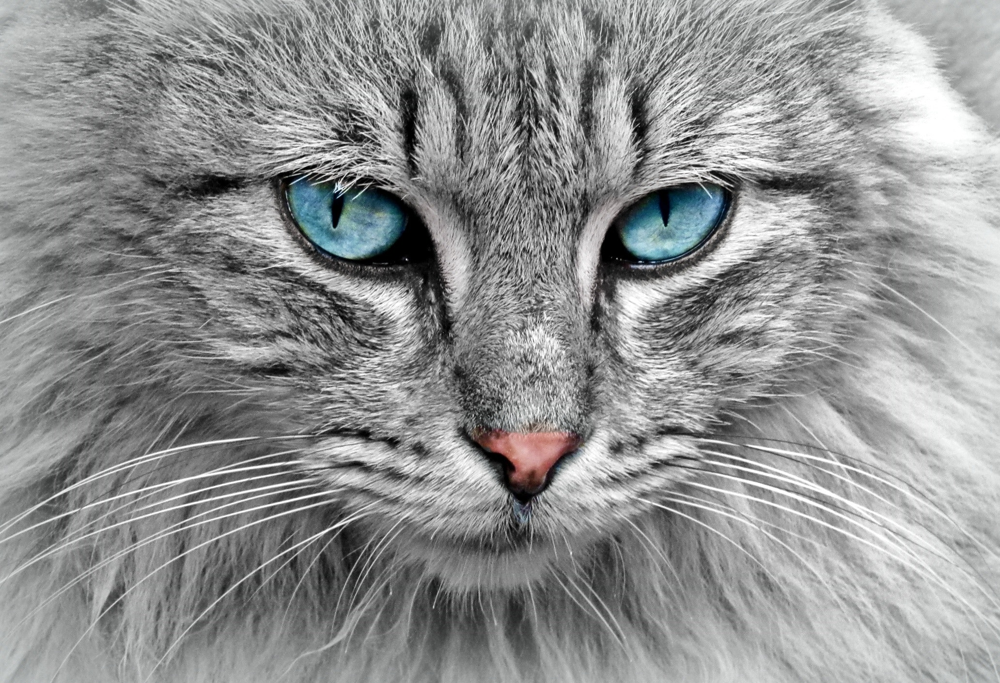

무리 생활을 하지는 않지만 자신보다 높은 서열의 고양이의 식사 순서를 지키는 등 서열 의식이 갖춰져 있다. 고양이 울음소리의 사회적 역할은 침입자에 대한 것과 나머지 세 가지 소리의 종류에 따라 다르다. 코로 내는 가르랑 소리는 고양이 간의 인사 혹은 다치거나 아픈 고양이에 대한 사회적 관심을 표현하는 것이다. 또한 비음을 섞은 떨림 소리는 인사를 위한 것이다. 천천히 다가오며 『야옹』과 같이 입을 열며 내는 울음소리는 종류가 많은데, 주로 다른 고양이나, 개와 인간같은 다른 동물과의 인사내지 사회적 상호작용을 위한 상황에서 내는 것이다. 입을 열면서 내는 소리, 『하-악』이나 으르렁거림은 주로 고양이의 공격성과 관련된다. 영역동물이기에 자신의 영역에 표시를 자주 한다. 흔히 고양이가 사물이나 사람에게 머리를 부비며 다니는 것을 볼 수 있다. 이것은 고양이의 영역 페로몬을 발산하는 취선이 귀 뒤에 있으며, 이 부분을 문질러 페로몬을 묻혀 자신의 영역이라고 광고하는 것이다. 스크래치 역시 영역 표시의 일종이기도 하다. 몸을 세워 높은 위치를 긁어놓는 행동은 '이따만한 고양이가 여기 살고 있으니 다른 고양이 출입금지!'라는 위협의 뜻이다.[11] 그리고 낯선 물건이나 사람을 접했을 때에는 코끝으로 톡톡 쳐볼 때가 있는데, 낯선 물건에 대한 호기심을 나타내고 탐색하는 것이다. 작은 동물을 사냥해서 먹고 사는 고양이에게 있어서 영역 사수는 곧 생존 문제와 직결된다. 쉽게 말해 자기 영역에 못 보던 다른 고양이가 있는 것은, 사람으로 치면 생판 모르는 남이랑 은행 계좌를 같이 사용하는 꼴이다. 일정 영역에 사냥감은 한정되어 있는데, 사냥꾼이 늘어나면 자기가 아무리 뛰어난 사냥꾼이라도 굶는 것을 피할 수 없기 때문. 야생동물 태반이 영역본능이 있지만 고양이는 독립생활을 하고, 비교적 소형 동물이며, 소형동물을 주식으로 삼는다는 특성 때문에 텃세권에 대한 집착이 유별하다. 그 때문에 야생에서는 새끼가 어느 정도 크고 나면 어미가 새끼를 위협해서 영역 밖으로 쫓아내며, 자기 영역을 침범한 고양이는 결투를 벌여 쫓아내기도 한다. 그래도 나름 고등동물이라서 일단 먹이가 충분하고 상대가 자신에게 위협이 되지 않는다고 판단하면, 여러 마리가 영역이 교차하는 곳에서도 공존하는 모습을 보인다. 하지만 인간의 눈에는 잘 보이지 않지만 그들 사이에는 치열한 서열싸움을 통해 결정된 엄격한 서열이 존재하는 갑질하는 상황이며, 먹이를 먹을 때, 그루밍할 때, 똥오줌 쌀 때 서열이 드러난다. 집에서 키우는 고양이일 경우 어미랑 새끼가 같이 있을 때에는 야생처럼 자기 영역 밖으로 내쫓지는 않으나 대개 서로 장난치면서 데면데면하게 지내는 경우가 많다. 고양이의 텃세는 '동종'에만 국한되어 있다. 고양이를 기르고 있는 사람 집에 고양이를 데리고 놀러가면, 보통 때 같으면 처음 보는 사람을 무서워하며 경계하던 고양이가 처음 보는 사람 따위는 가까이 오건 쓰다듬건 안중에도 없고, 상대묘만 경계하며 미칠 듯한 신경전을 벌이는 상황을 볼 수 있다. 가장 극명하게 드러나는 상황은 이미 고양이를 기르고 있는데 새로운 고양이(둘째, 셋째...)를 들이는 경우다. 백이면 백 미칠 듯이 경계한다. 새로운 고양이를 들이면 자기들 간에 반죽도록 서열싸움을 한다. 서열싸움을 하면서 다치기도 한다. 서열싸움을 하고나서 관계가 정리되면 다행이지만 자존심과 독립성이 강한 고양이의 특성상 낮은 서열의 고양이가 다시 재도전하여 서열싸움이 반복되는 경우도 많다. 그 결과에 따라 서열이 바뀌기도 한다. 한집에 같이 살면서도 죽을 때 까지 몇년이고 계속 서열 싸움이 반복되는 경우도 있다. 서열싸움 후 관계가 정리되어 서로 평화롭게 지내는 것 같아 보여도 사실은 그들 사이에 서열에 따라 행동하며 갑질을 주고받는 관계에 있다. 고양이의 영역 본능은 상상 이상으로 강력한 것으로, 성묘에겐 위협이 되지 못할 새끼 고양이를 들여오는 경우에도 가차없이 서열싸움을 시작하여 초주검 상태까지 몰고 가기도 한다. 사실 성묘들간의 서열싸움이 겉보기에는 더 치열해 보여도 어느정도 경험이 있기 때문에 간 좀 보다가 사이즈 나오면(?) 금방 끝나는 경우도 많다. 오히려 새끼 고양이 쪽이 상황 판단을 하지 못하고 영역에서 밀리면 안된다는 본능에 말려 항복하지 않고 버티다가 서열싸움이 길어지는 경우도 많다. 그렇다고 성묘가 쉽게 넘어갈리도 없고 확실한 서열이 정해질 때까지 계속 맞는 거다.소에 연락하거나 홈페이지에 들어가보는 것이 좋다. 물론 코숏 등 흔한 길고양이와 구분이 힘들다면 행인들도 '아, 길고양이구나.'하고 대수롭지 않게 여기고 갈 길 가지만 품종묘의 경우 일반적인 길고양이들과 눈에 띄게 다르게 생긴 경우가 많아[10] 가출한 고양이일지도 모른다는 생각에(그정도는 아니더라도 사람 손을 탄 고양이라는 생각에) 동물보호소에 연락하는 경우가 생각보다 많다.


- 